casper
The tools a coding agent runs, and the screen they draw on. One process per call, and it knows nothing about models, turns or transcripts.
What it offers
| tools | for |
|---|---|
cat ls find grep patch | reading the tree |
shell pwd | running a command, and remembering where it ran |
screen | an interactive program — a pager, an editor, htop, git add -p — in rows on the screen |
hexe oslo session | asking the multiplexer, the shell, or the harness about themselves |
dino birdy | two games, because a surface that can draw a game can draw anything |
Every one is declared in Lua, in ~/.config/casper/tools.lua, which
make install puts there. Editing it changes the tools on the next call — no
rebuild. It used to be compiled into the binary, which meant reading what the thirteen
actually do, or changing one, was a build.
Adding your own
A file in a directory. Nothing to register, no entry point to edit:
~/.config/casper/plugin/yours.lua alphabetical, each on its own ~/.local/share/casper/site/pack/*/start/*/plugin/*.lua installed packages ~/.config/casper/after/plugin/yours.lua the last word
The registry replaces by name, so the order is the precedence: a file declaring
cat means it, and after/plugin/ is how you override something you
did not write. make install overwrites tools.lua and never touches
these. See writing a tool.
plugin/ directory run on sight. Anything under site/pack/ is held back until casper acknowledge records its digest, and held back again the moment it changes.What a coordinator may tell it
| setting | does |
|---|---|
tools | per tool, by name. off removes it entirely — not listed, and refused if the model guesses the name anyway. hidden keeps it runnable and takes it out of what the model is shown. |
load | an extra declarations file, read after everything on disk |
output_bytes | how much of a result crosses back before it is cut. Head and tail both kept, and the note says how much went. |
-- in magi's config, in casper's vocabulary
magi.casper = { tools = { dino = { off = true } }, output_bytes = 65536 }
Why a spawn and not a socket
casper's job is running programs, and a socket that runs commands is a remote shell wearing a friendly name. The spawn link carries the trust instead: a parent that can spawn casper could have run the command itself, so nothing is granted by handing it over. One exec per call.
tools role, and is the default rather than the only choice. magi.tools hands the role to any program that answers tools and run — see swapping a program. The settings table follows the program’s own name, so magi.casper is casper’s because casper is the one filling the role.At a terminal
casper tools every tool it offers, as declarations a harness can register casper run <tool> run one; the call arrives as JSON on stdin casper surface <tool> hold rows on the harness's screen and draw into them casper verbs what it answers, on each of its doors casper needs what a coordinator may tell it casper configure take that configuration, as Lua on stdin casper acknowledge clear the installed packages, so their declarations may run casper client a refusal: casper is reached by spawning it with a call casper tools --cbor the same reply, as bytes